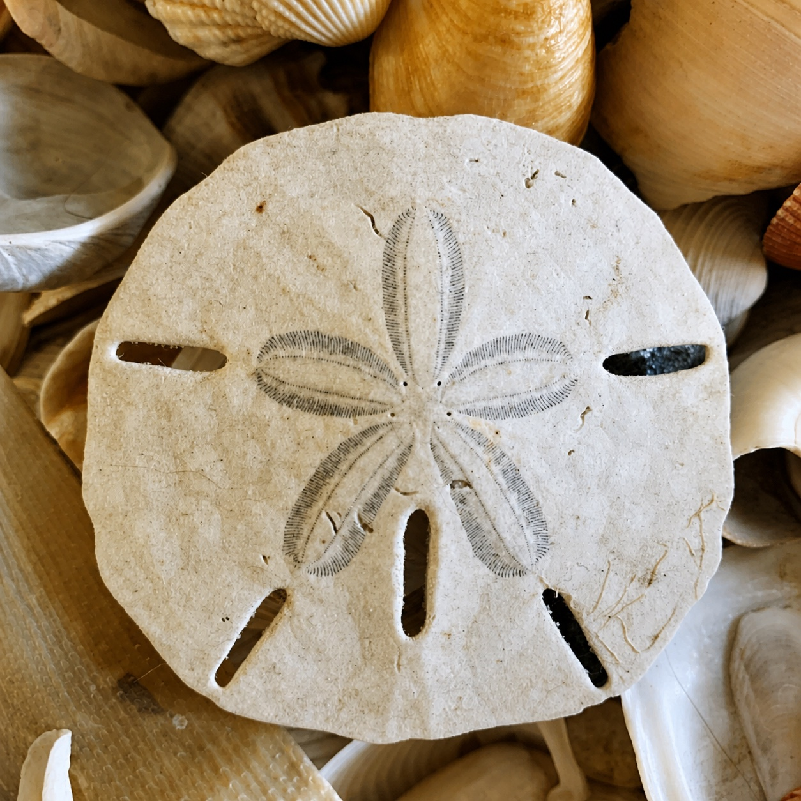

Glass sounds louder when you are the one breaking it. Mistakes are something that everybody has gone through. The tinge of redness on your cheeks, feeling your face burn, and your body becoming warmer and warmer. The embarrassment of doing something that someone never expected out of you, and that look of disappointment.
When I was young, I was so scared of making any mistakes. Whether it be a performance, an interview, a game, or a test, I would always worry about making mistakes before they even happened. I was so worried about making mistakes that it would eventually lead me to making those exact mistakes when I was actually on the field.
I remember when I was little, my mom had a sand dollar that was put next to a picture of her and me. I never knew what it was before, but I knew it was special to her because she was a very clean individual who didn't like to have trash or miscellaneous items lying around. I picked it up and tried to examine it, pressing down a little too hard and shattering it. As soon as I heard the crunching sounds of the sand dollar crumbling on itself, my heart and stomach dropped. My face started burning, and I tried my best to piece it back together to no avail. Tears started streaming down my face, and I was super disappointed in myself.
I knew that my mom would be sad that her sand dollar was broken, so I started packing up my stuff to leave the house and go to my dad's. I was worried about facing my mistake and was worried about seeing those eyes of disappointment. However, when I was packing, my mom arrived home and saw me next to the broken sand dollar. To my shock, she didn't yell at me, and she didn't look at me with disappointment. She started laughing and hugged me. That simple embrace was all I needed to know that she wasn't mad at me for making the mistake, and I made myself believe that the punishment for making this mistake was unamendable. A simple apology was all she needed.
The next day, I went to the beach with her to find new sand dollars to fill the house with, and this experience taught me that the mistakes you make aren't as bad as you truly believe. Stop beating yourself down and believing that a mistake embodies who you are. Most importantly, don't try to run away.
I realized that the fear of my mistakes coming to light was worse than what actually happened. I was completely convinced that one broken sand dollar would change my relationship with my mom, that she wouldn't be able to see me in the same light. In reality, she didn't even care about the sand dollar and cherished the moments we spent together and the sand dollars we collected over anything else.
I think many of us do the same thing that I did. We treat our mistakes like breaking a sand dollar, not being able to be repaired or amended. We believe that running away will shield us from the embarrassment and disappointment that will be sure to happen if others see what we did.
Your mistakes define you in only one way. They allow you to reflect on shortcomings you might have had and to grow and ensure that they don't happen again. They are reminders that you are human and that you have room to grow. Most importantly, you will make many mistakes in your lifetime, some of which are worse than others, and there is truly no point in trying to run away or avoid encountering them.
You have to learn how to confront the mistakes you make, facing them head-on and realizing that they will only serve as a way for you to grow stronger. That sand dollar broke because I was curious, not because I was a bad person. Glass sounds louder when you break it, but often, people around you hear something much softer than you think.
Support
Resources & Support
If this story resonated with you, the following resources may help support individuals navigating perfectionism, anxiety surrounding mistakes, self-worth struggles, and emotional growth.
Broad Shoulders Initiative is not a crisis service, medical provider, or therapy provider. If support feels urgent, please contact emergency services, a trusted adult, a school counselor, or a licensed professional.